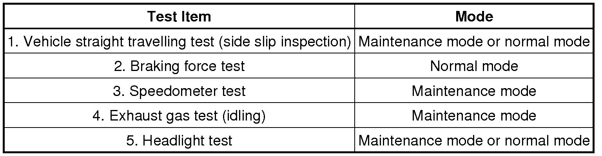
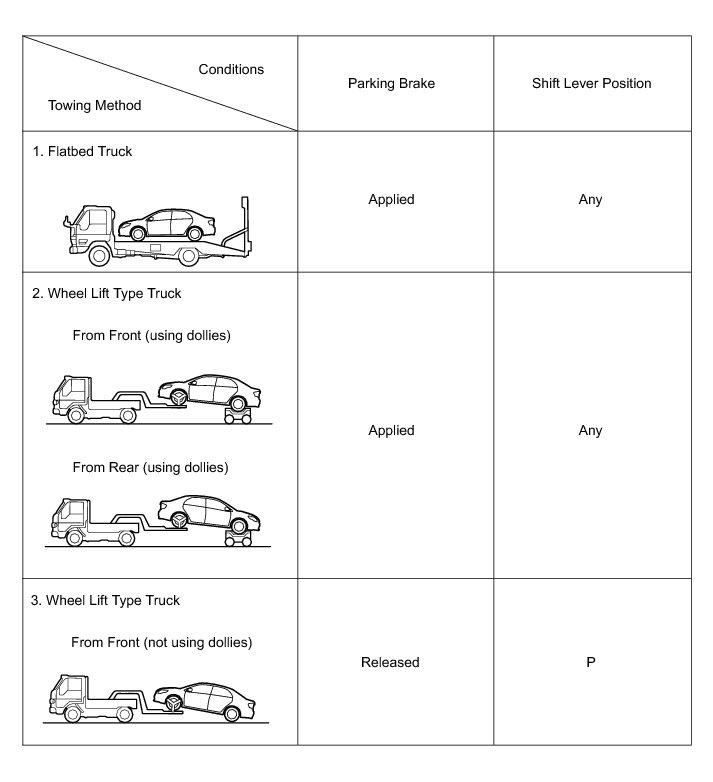
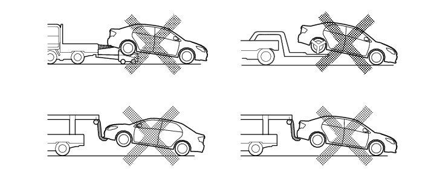

INTRODUCTION: REPAIR INSTRUCTION: PRECAUTION; 2013 MY Camry HV [12/2012 -] Continued
15. WHEN INSPECTING VEHICLES
NOTICE:
When the vehicle is run in inspection mode for an operation such as a speedometer test, a DTC may be set. Therefore, if the warning light comes on, after canceling inspection mode, check for DTCs using the Scan Tool and clear the DTCs.
(a) VEHICLE CONDITIONS
(1) Before activating inspection mode, turn the air conditioning off, start the hybrid system with shift lever in P, and check that the engine stops within several seconds after starting (engine warm up check).
(2) Activate the appropriate inspection mode and inspect the vehicle .
HINT
Different types of inspection mode are available. One is maintenance mode, and the other is certification mode. The following table indicates the mode appropriate for each test item.

(3) Cancel inspection mode immediately after completion of inspection.
NOTICE:
Driving the vehicle without canceling inspection mode may damage the transaxle.
(b) WHEN USING A BRAKE TESTER
CAUTION:
Be sure to perform the test in maintenance mode.
NOTICE:
* A high-speed type brake tester cannot be used.
* Vehicle speed should be less than 0.5 km/h (0.3 mph).
* Follow all usage and safety procedures in the operator's manual for the brake tester.
(1) Place the wheels to be tested (front or rear) onto the rollers.
(2) Start the hybrid system to allow normal brake booster operation.
(3) Move the shift lever to N.
(4) Operate the brakes to perform the test.
(c) WHEN USING A SPEEDOMETER TESTER
CAUTION:
Be sure to perform the test in maintenance mode.
NOTICE:
Do not perform rapid starting or quick acceleration on a speedometer tester. If rapid starting or quick acceleration is performed on a speedometer tester, damage may occur to the transaxle.
(1) Depress the accelerator pedal slowly and gradually accelerate the vehicle. Make a measurement.
(2) After the measurement, use the brakes to gradually decelerate the vehicle.
(d) WHEN USING A CHASSIS DYNAMOMETER
(1) Always set an appropriate load before starting the test.
NOTICE:
Sudden acceleration or deceleration of the vehicle on a chassis dynamometer under minimal load may damage the transaxle.
(e) WHEN USING AN ON-VEHICLE BALANCER
(1) Raise the vehicle until all 4 wheels are off the ground.
(2) Support the vehicle with safety stands at an appropriate height. Make sure that the vehicle does not lean in any direction, and that the tires are completely clear of the floor.
(3) Place the vibration pick-up unit into position for the wheel to be measured*1.
(4) Release the parking brake.
(5) Check that no dragging force exists when turning each wheel by hand.
(6) Put the wheel balancer in position.
(7) Wheel balance measurement should be done by using both the engine and the wheel balancer drive roller to spin the wheels.
HINT
*1: Different on-vehicle wheel balancers have different requirements for mounting the vibration pick-up unit(s) . Refer to the operator's manual for the wheel balancer to confirm requirements for use.
NOTICE:
* Be sure to perform the test in maintenance mode.
* Start the hybrid system and then increase the vehicle speed gradually with the shift lever in D.
* Do not accelerate or decelerate suddenly.
* Deceleration should be done by braking gradually.
* Make sure that no one is standing in-line with the spinning wheels.
* Measurement should be done quickly.
* Confirm that the vehicle is securely immobilized.
* Follow all usage and safety procedures in the operator's manual for the wheel balancer.
16. PRECAUTIONS FOR TOWING FRONT WHEEL DRIVE VEHICLES
(a) Use one of the following methods to tow the vehicle.
(b) If the vehicle has trouble with the chassis or drivetrain, use method 1 (flatbed truck).

NOTICE:
Do not use any towing method other than those shown above.
(c) If a tow truck is not available, in an emergency the vehicle may be temporarily towed using a cable or chain secured to the emergency towing eyelet(s) . This should only be attempted on hard surfaced roads for short distances below 30 km/h (19 mph).
A driver must be in the vehicle to steer and operate the brakes. The vehicle's wheels, drivetrain, axles, steering and brakes must be in good condition.
NOTICE:
If the towing speed or distance exceeds the above limits, or the vehicle is towed in a backward direction with the front wheels on the ground, the transaxle may be damaged.
(1) Emergency towing procedure
1 Turn the power switch on (IG).
2 Depress the brake pedal and move the shift lever to N.
3 Release the parking brake.
4 Release the brake pedal slowly.
NOTICE:
* Use extreme caution when towing the vehicle. Avoid sudden starts or erratic driving maneuvers which place excessive stress on the emergency towing eyelet and the cables or chains.
* If the hybrid system is off, the power assist for the brakes and steering will not function, making steering and braking more difficult.
* Do not turn off the power switch. Turning off the power switch may result in engagement of the steering lock, resulting in a hazardous situation or accident.
(d) The towing methods shown below are dangerous and can damage the vehicle, so do not use them.

(1) Do not tow the vehicle facing rearward with the front wheels on the ground.
NOTICE:
* If the vehicle is towed facing rearward with the front wheels on the ground, the drivetrain may overheat and be damaged.
* In addition, if the vehicle is equipped with the VSC system, the system may apply the brakes to the rotating wheels.
(2) Do not use a sling-type towing method either from the front or rear.
NOTICE:
If a sling-type tow truck is used, damage may occur to the vehicle body.
17. FOR VEHICLES EQUIPPED WITH CATALYTIC CONVERTER
CAUTION:
If a large amount of unburned gasoline or gasoline vapors flow into the converter, it may cause converter overheating and create a fire hazard. To prevent this, observe the following precautions:
(a) Use only unleaded gasoline.
(b) Avoid performing unnecessary spark tests.
(1) Perform a spark test only when absolutely necessary. Perform this test as rapidly as possible.
(2) While testing, never race the engine unless instructed.
(c) Avoid a prolonged engine compression measurement. Engine compression measurements must be performed as rapidly as possible.
(d) Do not run the engine when the fuel tank is nearly empty. This may cause the engine to misfire and create an extra load on the converter.